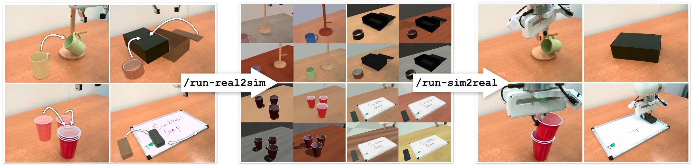
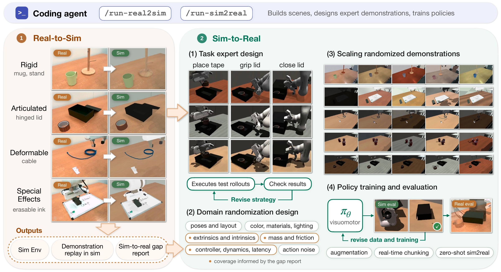
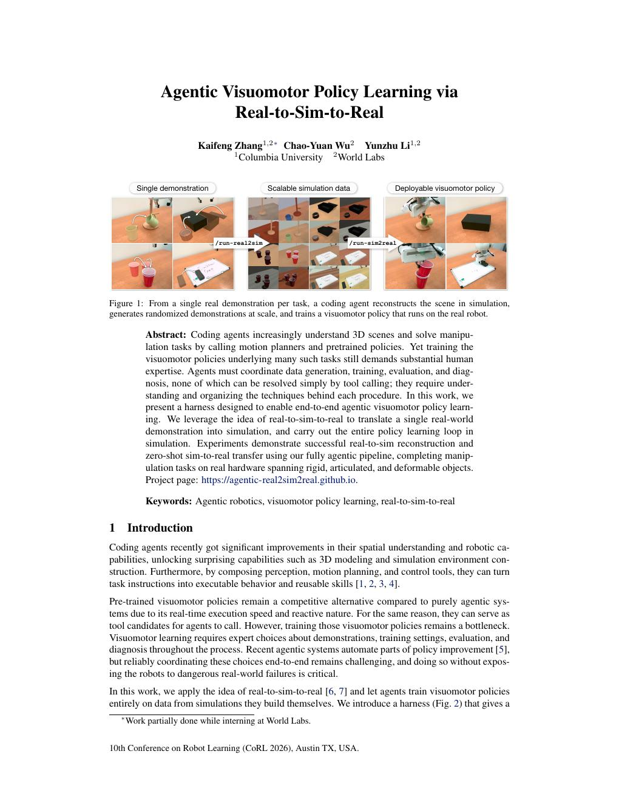

From one demonstration to a deployed policy

/run-real2sim) and generates randomized demonstrations at scale. Right: the visuomotor policy it trains (/run-sim2real) running on the real robot, near the end of each task.
Real-to-sim beyond rigid objects
Randomized demonstrations at scale
The agent-written task expert collects demonstrations under randomized lighting, materials, cameras, image effects, object layouts, physics, controller dynamics and external pushes. Pick a kind of randomization to see training episodes that have the most of it, with the values sampled for each one.
Training-set videos as the policy sees them: one frame per supervised sample, so motion is not real time. Values are the episode's recorded draws; scales are relative to the reconstructed scene.
Closed-loop evaluation in sim and real
Results
| Task | Sim nominal | Sim mild | Sim broad | Real robot |
|---|---|---|---|---|
| Mug hanging | 100%1/1 | 100%20/20 | 100%20/20 | 88%22/25Failures: missed pickup, mug not released, and protective stops |
| Tape in box | 100%1/1 | 45%9/20 | 75%15/20 | 72%18/25Failures: tape placed inside but lid left open |
| Cup nesting | 100%1/1 | 95%19/20 | 90%18/20 | 80%20/25Failures: incomplete upright nesting or toppled stacks |
| Whiteboard wiping | 100%1/1 | 75%15/20 | 55%11/20 | 52%13/25Failures: missed grasps or failed release |
| Cable routing | 100%1/1 | 75%15/20 | 50%10/20 | 76%19/25Failures: missed grasps or incorrect placement |
Real rollouts
Discussion
Our experiments highlight both the capabilities and the remaining challenges of agentic visuomotor policy learning. Below, we discuss what worked, what remained difficult, the limitations of our evaluation, and directions for future work.
What worked
In our experiments with the GPT-6 Astra series, agents showed strong capabilities in code-based 3D modeling, carrying out zero-shot real-to-sim reconstruction with relatively little additional scaffolding. Agents could even reconstruct scenes with challenging physics models without being supplied with template code. These spatial reasoning capabilities also appeared to extend to robot control: agents could develop motion plans in relatively few iterations, drawing on the close connection between action planning and reasoning about 3D geometry.
What remained difficult
One interesting observation from our experiments is that, despite their strong capabilities in real-to-sim construction and action planning, agents were less reliable at applying best practices for generating training data and training policies. Without explicit guidance from the harness, they sometimes omitted important sources of variation from domain randomization or chose unsuitable training hyperparameters. For example, they could apply too little visual randomization, choose an action chunk that was too short, or set the learning rate too low.
We found it useful to provide default values in the harness and explicitly explain when and why the agent should override them. These defaults give the agent a starting point, while guidance on adapting them helps it make informed choices for each task.
Detailed harness instructions do not fully solve this problem. They can constrain the agent’s creativity while still leaving gaps in its decisions. For example, an agent may generate an expert plan that satisfies the stated requirements but is not robust, such as grasping an object near an edge rather than choosing a more stable grasp. This leaves a tradeoff between providing enough guidance for reliable behavior and preserving the agent’s ability to explore better solutions.
Limitations
Our evaluation does not sufficiently cover contact-rich, high-precision, or dynamic tasks, or tasks that require open-world generalization. We also only evaluate a specific combination of ACT policies and GPT-6 Astra, though we expect the harness to generalize to other agents and policy architectures.
Furthermore, these experiments do not use large-scale pretrained vision-language-action models, such as π₀.₅, or world action models. We also do not use feedback from real-world deployment to initiate additional real-to-sim-to-real rounds and refine the policies. Incorporating these models and iterative deployment feedback would introduce new opportunities as well as new challenges.
Next steps
Recent growth in agent capabilities suggests that even complex domains can become increasingly tractable through data, computation, and training. From this perspective, the difficulties we observed in generating training data and launching policy training motivate further work on incorporating robotics expertise into agents through post-training and harness design. The goal is to equip agents with the domain knowledge and judgment needed to make decisions at the level of a robotics expert.
Future research could also study the tradeoff between providing enough guidance for reliable behavior and preserving the agent’s ability to explore better solutions. Understanding this balance could inform more effective harness designs. Another direction is to learn from real-world deployment feedback, using observed successes and failures to guide new real-to-sim-to-real rounds. This could support continual self-improvement as agents refine their simulations, data-generation strategies, and policies through repeated deployment. Finally, extending the approach to contact-rich, high-precision, and dynamic tasks, while incorporating useful priors from pretraining, would broaden its scope and test its capabilities under more demanding conditions.
Paper

Agentic Visuomotor Policy Learning via Real-to-Sim-to-RealCoRL 2026 late-breaking results, extended abstract